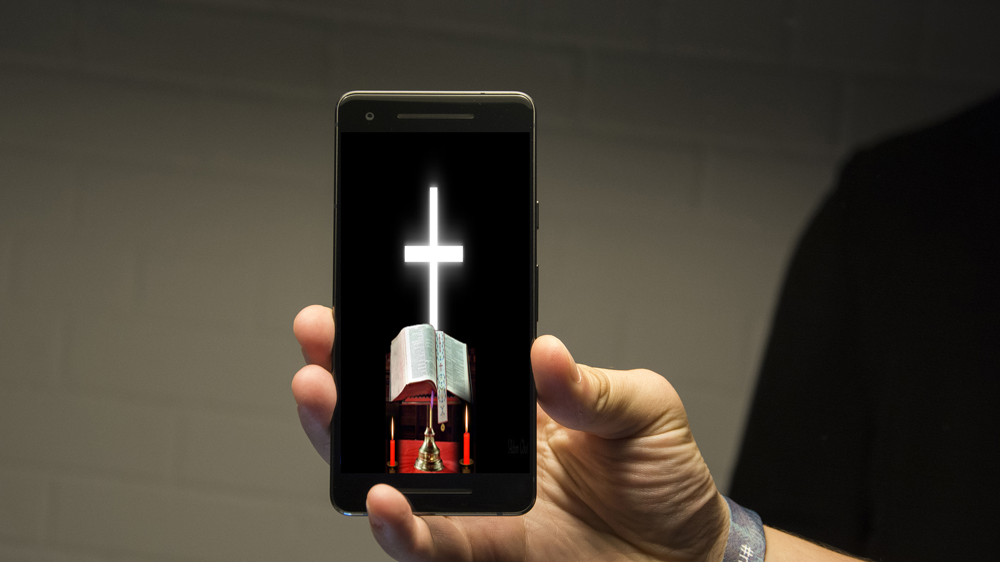

Graphic design is a form of visual communication and leverages images and other visual elements to convey ideas. From logos to billboards to packaging for products, we bring concepts, ideas, and stories to life using typography, shapes, color, and images. Our design work educates and inspires customers to learn more about something, to make a purchase, or to sign up.
Our Graphic designs include:
Visual identity: logos, letterhead, business cards
In today's highly competitive marketplace, the role of digital photographs is extremely crucial from a marketing viewpoint for any business. Properly edited photographs and images represent the brand and convey a businesses' message in the best possible manner. This makes photo editing an essential part of any marketing, communication or branding activity, and is the reason why we take photo editing as one of the most important processes in the industry.

Key benefits of our photo editing for your business needs -
Brand Building:
Images are extremely important in order to build your brand. We focus on a particular style of editing, like focusing on saturation of particular colours, cropping pattern, nature of images, subjects used, focusing patterns, etc., to create a brand-aware edited image.
Better Sales:
The very essence of photo editing is to increase the overall quality of your images. You do not want mediocre images to represent your products or services. That is why we instantly change the complexion and quality of your image to make it look alluring for the general public
Build Respectability and Credibility:By editing your photos in a professional manner, a small office space can be made to look spacious and inviting, without misleading your viewers
Easy Multi-platform Customization:
The way an image looks in your print ads may differ from your digital ads; it could be different for social media, for mobile platforms, for monochrome prints, etc. Our professional photo editing skills will help you customize your images to have the same impact on multiple platforms
Reuse Images for Better Efficiency:
Reusing images for multiple purposes is one of the advantages of photo editing. Our professional photo editing skills,wil enable you use the same image for various purposes by changing its background or by clubbing it with other images
Robust Social Media Strategy:
Today, social media is the foremost marketing channel for most businesses out there. From Facebook to Instagram, and many others in between, social media has managed to bring customers and brands closer than ever before. By professionally editing your images before upload, adding visual cues, beautiful word-art, etc., you can give your business a head-start over your competition
Our Video editing Services
HBC offers video editing services to suit your every unique need. We promise to deliver high quality videos that you will play over and over again. HBC offers outsourcing services to both large and small companies.
Our Services
Wedding Video Editing
Promos/Adverts
Corporate Video Editing
Gopro Video Editing
Holiday Video Editing
Family Video Editing
Website Design
Having a website gives you a chance to gain more clients that can help your business grow. HBC designs for you websites that standout from the rest.
Key Elements Of Our Website Designs
1. Appearance
The websits we create are visually appealing, polished and professional. Remember, reflecting your company, your products and your services.Our attractive designs will no doubt generate a positive impression and keep visitors on your site once they arrive. We ensure:
Good use of color: We use appropriate colors that blend well and create a proper mood or tone for your business. Our choice of color, does not distract from the written content.
Text that is easily read: Our designs use fonts that are easy to read and are found on most of today's computer systems.
Meaningful graphics:
Quality photography: We increase your visual appeal by using high quality photography. High quality product images are especially important for online retailers.
Simplicity: We basicaly Keep it simple and allow for adequate white space which allows viewers to focus on your message. We don't overload your site with overly complex design, animation, or other effects just to impress your viewers.
2. Content
Along with style, we ensure that your site has substance. Remember that your audience is looking for information that will help them make a decision, so we ensure that the website is informative and relevant. This to us is an opportunity to increase visitor confidence in your company's knowledge and competence.
3. Functionality
we ensure that our web designs across the spectrum, everything works as expected, including hyperlinks, contact forms, site search, event registration, and so on
5. Usability
Your site will for sure be easy to read, navigate, and understand. Some of our key usability elements include:
Simplicity: The best way to keep visitors glued to your site is through valuable content, good organization and attractive design. We keep our website design simple and well organized.
Fast-loading pages: The pages we design should load in 20 seconds or less via dial-up.
Minimal scroll: We create links from the main page to read more about a particular topic. Search Engines will reward appreciates this.
Consistent layout: We use a consistent layout and repeat certain elements throughout the site.
Prominent, logical navigation: We limit your menu items to 10 or fewer. Remembering that your visitors are in a hurry and we don't want to make them hunt for information.
Descriptive link text: Our designs have long link text which makes it much easier for visitors to find their way around a site. Long, descriptive link text is favored by Search Engines, too. In addition to this we include Back links which are important to give users a sense of direction and to keep them from feeling lost.Not to mention we also use a site map, and breadcrumbs, if necessary.
Cross-platform/browser compatibility: Different browsers often have different rules for displaying content. We test your site in the latest versions of Internet Explorer (currently, versions 8 and 9), as well as Firefox and Safari.
Responsive Web Design: We ensure that our design makes web pages render well on a variety of devices and window or screen sizes.
Screen Resolution: Screen resolution for the typical computer monitor continues to increase. Today, the average web surfer uses a resolution of 1024 x 768 pixels. However, we make sure that what looks good at this setting will also work nicely for other resolutions.
5. Search Engine Optimized (SEO)
We employ strategies, techniques and tactics that increases the amount of visitors to your website by obtaining a high-ranking placement in the search results page of a search engine (SERP) — including Google, Bing, Yahoo and other search engines.